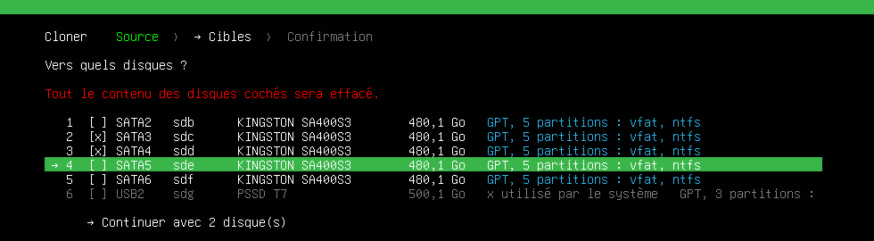
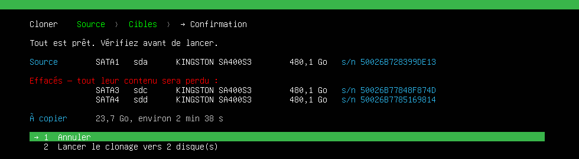
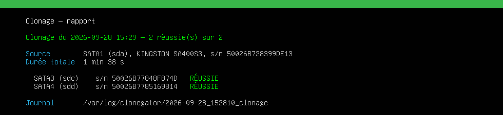

À quoi il sert
| Cloner | un disque vers un ou plusieurs disques, en même temps |
|---|---|
| Sauvegarder | un disque dans une image, sur un disque USB ou un partage réseau Windows |
| Restaurer | une image vers un ou plusieurs disques |
| Mode station | pour une machine à baies : les emplacements réglés une fois, on change les disques et on lance |
Seules les données utiles sont copiées : 23,7 Go vers cinq SSD en 1 min 44 s sur notre station d'essai. Le disque d'origine passe en lecture seule pendant toute l'opération.
Comment l'utiliser
-
Choisir l'opération, puis les disques
Chaque disque est désigné par son emplacement (
SATA1,USB2…). Ceux qu'on ne peut pas choisir restent visibles, avec la raison.
-
Vérifier, puis lancer
Un écran récapitule ce qui sera effacé, numéros de série compris. « Annuler » est le choix par défaut.

-
Lire le rapport
Un verdict par disque, qui reste affiché jusqu'à ce qu'on le lise.

↑ ↓ ou un numéro pour choisir, Entrée pour valider, Échap pour revenir. F2 change la langue (anglais, français), F3 le clavier.
Installer
Sur Debian ou Ubuntu :
# Ajouter le dépôt GatorTools
sudo wget -qO /etc/apt/keyrings/gatortools.gpg https://gatortools.github.io/apt/gatortools.gpg
echo "deb [signed-by=/etc/apt/keyrings/gatortools.gpg] https://gatortools.github.io/apt stable main" | sudo tee /etc/apt/sources.list.d/gatortools.list
# Installer CloneGator
sudo apt update && sudo apt install clonegatorPuis sudo clonegator. Sans rien installer : l'ISO live.